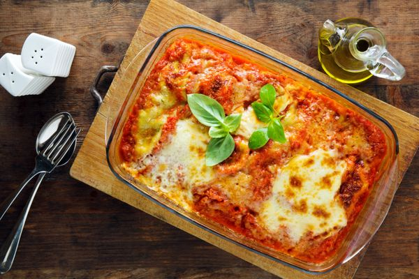

Lasagna de Carne

Lasagna
Una buena alternativa a la hora de un antojo de pastas es la lasagna. Si los fideos, los ravioles y los ñoquis ya no te llaman la atención y estás buscando una alternativa, te recomendamos estas recetas fáciles y rápidas para hacer lasagna de verduras o de carne..
Preparación
Precalentamos el gratinador del horno a temperatura máxima.
Ponemos nuestra sartén de hierro a fuego alto, agregamos un poco de aceite de oliva y la carne a la sartén. Cocinamos revolviendo cada minuto más o menos hasta que la carne ya no esté rosada.
Mientras tanto, combinamos el queso ricotta y el parmesano en un tazón.
Agregamos la pasta de tomate y la mantequilla a la carne y mezclamos bien. Cocinamos unos minutos más hasta que la mantequilla se derrita y todo esté caliente.
Reducimos el fuego de la sartén a medio. Retiramos 3/4 de carne de la sartén y alisamos la carne restante sobre la base.
Cubrimos con hojas de lasaña. A continuación, agregamos más carne y ponemos otra capa más de lasaña. Luego cubrimos con más carne y ponemos parmesano rallado por encima. Cubrimos finalmente con otra capa de lasaña y de carne picada.
Extendemos la mezcla de queso ricotta sobre la parte superior para cubrir y rallamos más queso parmesano.
Colocamos en el gratinador caliente durante aproximadamente 5 minutos o hasta que la parte superior esté dorada y todo esté caliente. Si tenemos tiempo, dejamos reposar durante unos minutos antes de servir.